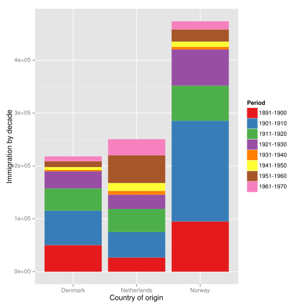
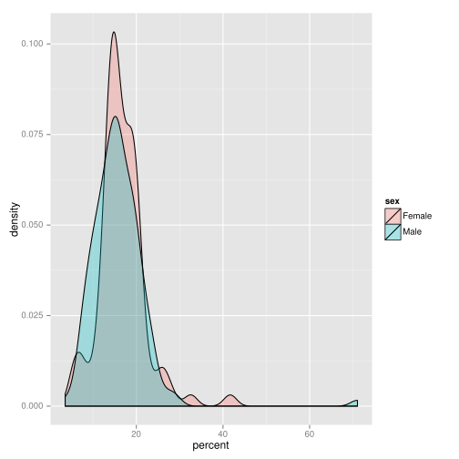
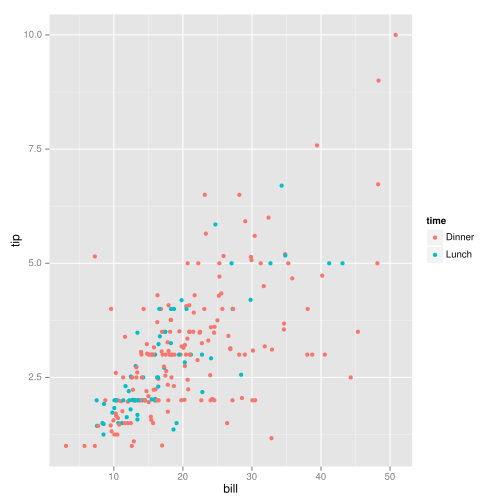

We know how to
Now it's time for some fun exploring the data!
We often need to know
cd ~/data-science-at-the-command-line/book/ch07/datalsdatatypes.csv immigration.dat investments2.csv iris.csv tips.csv
head iris.csv| csvlook|---------------+-------------+--------------+-------------+--------------|
| sepal_length | sepal_width | petal_length | petal_width | species |
|---------------+-------------+--------------+-------------+--------------|
| 5.1 | 3.5 | 1.4 | 0.2 | Iris-setosa |
| 4.9 | 3.0 | 1.4 | 0.2 | Iris-setosa |
| 4.7 | 3.2 | 1.3 | 0.2 | Iris-setosa |
| 4.6 | 3.1 | 1.5 | 0.2 | Iris-setosa |
| 5.0 | 3.6 | 1.4 | 0.2 | Iris-setosa |
| 5.4 | 3.9 | 1.7 | 0.4 | Iris-setosa |
| 4.6 | 3.4 | 1.4 | 0.3 | Iris-setosa |
| 5.0 | 3.4 | 1.5 | 0.2 | Iris-setosa |
| 4.4 | 2.9 | 1.4 | 0.2 | Iris-setosa |
|---------------+-------------+--------------+-------------+--------------|
Sometimes you want to print the entire contents to the screen with the cat command. But this prints it all at once. We can use the less command.
less -S iris.csvThe -S ensures that long lines are not wrapped. Use up and down to move through the file or by pressing the space.
sed -e 's/,/\n/g;q' iris.csvsepal_length
sepal_width
petal_length
petal_width
species
names () { sed -e 's/,/\n/g;q'; }names < iris.csvsepal_length
sepal_width
petal_length
petal_width
species
You can also use csvsql to determine the datatypes of the columns. Very important!
head datatypes.csva,b,c,d,e,f,g
2,0.0,FALSE,"""Yes!""",2011-11-11 11:00,2012-09-08,12:34
42,3.1415,TRUE,"Oh, good",2014-09-15,12/6/70,0:07 PM
66,,False,2198,,,
csvsql datatypes.csvCREATE TABLE datatypes (
a INTEGER NOT NULL,
b FLOAT,
c BOOLEAN NOT NULL,
d VARCHAR(8) NOT NULL,
e DATETIME,
f DATE,
g TIME,
CHECK (c IN (0, 1))
);
Now this isn't perfect and we need more information sometimes. Especially about factors and categories and things like zip codes. We can get some insight into this using csvcut, sort, and uniq. Or more conviently using the csvstat command.
PATH=$PATH:~/data-science-at-the-command-line/toolscat iris.csv|csvcut -c species | body "sort | uniq | wc -l"species
3
csvstat investments2.csv --unique 1. company_permalink: 27342
2. company_name: 27324
3. company_category_list: 8759
4. company_market: 443
5. company_country_code: 150
6. company_state_code: 147
7. company_region: 1079
8. company_city: 3305
9. investor_permalink: 11176
10. investor_name: 11135
11. investor_category_list: 468
12. investor_market: 134
13. investor_country_code: 111
14. investor_state_code: 80
15. investor_region: 549
16. investor_city: 1198
17. funding_round_permalink: 41790
18. funding_round_type: 13
19. funding_round_code: 15
20. funded_at: 3595
21. funded_month: 295
22. funded_quarter: 121
23. funded_year: 34
24. raised_amount_usd: 6143
csvstat datatypes.csv 1. a
<type 'int'>
Nulls: False
Values: 2, 66, 42
2. b
<type 'float'>
Nulls: True
Values: 0.0, 3.1415
3. c
<type 'bool'>
Nulls: False
Unique values: 2
5 most frequent values:
False: 2
True: 1
4. d
<type 'unicode'>
Nulls: False
Values: 2198, "Yes!", Oh, good
5. e
<type 'datetime.datetime'>
Nulls: True
Values: 2011-11-11 11:00:00, 2014-09-15 00:00:00
6. f
<type 'datetime.date'>
Nulls: True
Values: 2012-09-08, 1970-12-06
7. g
<type 'datetime.time'>
Nulls: True
Values: 12:34:00, 12:07:00
Row count: 3
csvstat datatypes.csv --max
csvstat datatypes.csv --min
csvstat datatypes.csv --stdevs
csvstat datatypes.csv --freq
# See book or documentation for full list
1. a: 66
2. b: 3.1415
3. c: True
4. d: Oh, good
5. e: 2014-09-15 00:00:00
6. f: 2012-09-08
7. g: 12:34:00
1. a: 2
2. b: 0.0
3. c: False
4. d: "Yes!"
5. e: 2011-11-11 11:00:00
6. f: 1970-12-06
7. g: 12:07:00
usage: csvstat [-h] [-d DELIMITER] [-t] [-q QUOTECHAR] [-u {0,1,2,3}] [-b]
[-p ESCAPECHAR] [-z MAXFIELDSIZE] [-e ENCODING] [-S] [-H] [-v]
[--zero] [-y SNIFFLIMIT] [-c COLUMNS] [--max] [--min] [--sum]
[--mean] [--median] [--stdev] [--nulls] [--unique] [--freq]
[--len] [--count]
[FILE]
csvstat: error: unrecognized arguments: --stdevs
1. a: { "2": 1, "42": 1, "66": 1 }
2. b: { "3.1415": 1, "0.0": 1 }
3. c: { "False": 2, "True": 1 }
4. d: { "2198": 1, ""Yes!"": 1, "Oh, good": 1 }
5. e: { "2014-09-15 00:00:00": 1, "2011-11-11 11:00:00": 1 }
6. f: { "2012-09-08": 1, "1970-12-06": 1 }
7. g: { "12:07:00": 1, "12:34:00": 1 }
You can also select a subset of features
csvstat investments2.csv -c 2,13,19 2. company_name
<type 'unicode'>
Nulls: True
Unique values: 27324
5 most frequent values:
Aviir: 13
Galectin Therapeutics: 12
Rostima: 12
Facebook: 11
Lending Club: 11
Max length: 66
13. investor_country_code
<type 'unicode'>
Nulls: True
Unique values: 111
5 most frequent values:
USA: 20806
GBR: 2357
DEU: 946
CAN: 893
FRA: 737
Max length: 15
19. funding_round_code
<type 'unicode'>
Nulls: True
Unique values: 15
5 most frequent values:
a: 7529
b: 4776
c: 2452
d: 1042
e: 384
Max length: 10
Row count: 41799
One nice thing is csvstat also reports the number of rows. Also, don't forget that these are based on heuristics, so double check with manual inspection.
So here the book goes on a tangent about a program called Rio, which allows us to run R and create plots at the command line. While this is sometimes necessary if you have a pipeline, I find this not as useful to just switching over to a language with plotting abilities. We will just use R notebooks, which I'll show you how to setup during lab/worksheet day. I will switch over to a R notebook now.
head immigration.csvPeriod,Austria,Hungary,Belgium,Czechoslovakia,Denmark,France,Germany,Greece,Ireland,Italy,Netherlands,Norway,Sweden,Poland,Portugal,Romania,Soviet_Union,Spain,Switzerland,United_Kingdom,Yugoslavia,Other_Europe,TOTAL,
1891-1900,234081,181288,18167,0,50231,30770,505152,15979,388416,651893,26758,95015,226266,96720,27508,12750,505290,8731,31179,271538,0,282,3378014,
1901-1910,668209,808511,41635,0,65285,73379,341498,167519,339065,2045877,48262,190505,249534,0,69149,53008,1597306,27935,34922,525950,0,39945,7387494,
1911-1920,453649,442693,33746,3426,41983,61897,143945,184201,146181,1109524,43718,66395,95074,4813,89732,13311,921201,68611,23091,341408,1888,31400,4321887,
1921-1930,32868,30680,15846,102194,32430,49610,412202,51084,211234,455315,26948,68531,97249,227734,29994,67646,61742,28958,29676,339570,49064,42619,2463194,
1931-1940,3563,7861,4817,14393,2559,12623,144058,9119,10973,68028,7150,4740,3960,17026,3329,3871,1370,3258,5512,31572,5835,11949,377566,
1941-1950,24860,3469,12189,8347,5393,38809,226578,8973,19789,57661,14860,10100,10665,7571,7423,1076,571,2898,10547,139306,1576,8486,621147,
1951-1960,67106,36637,18575,918,10984,51121,477765,47608,43362,185491,52277,22935,21697,9985,19588,1039,671,7894,17675,202824,8225,16350,1325727,
1961-1970,20621,5401,9192,3273,9201,45237,190796,85969,32966,214111,30606,15484,17116,53539,76065,3531,2465,44659,18453,213822,20381,11604,1124492,
We are now using the R programming language and specifically, I want to show you some examples using a program called ggplot.
First thing is we need to modify the data we are going to plot. We could do that in a bash terminal, but you should know that you can call bash from R using the system function.
setwd("~/data-science-at-the-command-line/book/ch07/data")See the book for a break down of this command, but we need to use our command line magic to change the file for easier input into R.
system("sed -re '/^#/d;s/\t/,/g;s/,-,/,0,/g;s/Region/Period/' immigration.dat > immigration.csv")Now we are ready to plot!
df = read.csv('immigration.csv')library(ggplot2)
library(reshape2)df.long = melt(df,id="Period",variable.name="Country",value.name="Count")
ggplot(df.long[which(df.long$Country %in% c('Denmark','Norway','Netherlands')),]) + geom_bar(aes(Country,Count,fill=Period), stat="identity") +
scale_fill_brewer(palette="Set1") +
labs(x="Country of origin",y="Immigration by decade")

colnames(df)df = read.csv('tips.csv')ggplot(df) + geom_density(aes(tip/bill * 100,fill=sex),alpha=0.3) + xlab("percent")
df = read.csv('tips.csv')ggplot(df) + geom_point(aes(bill,tip,color=time))